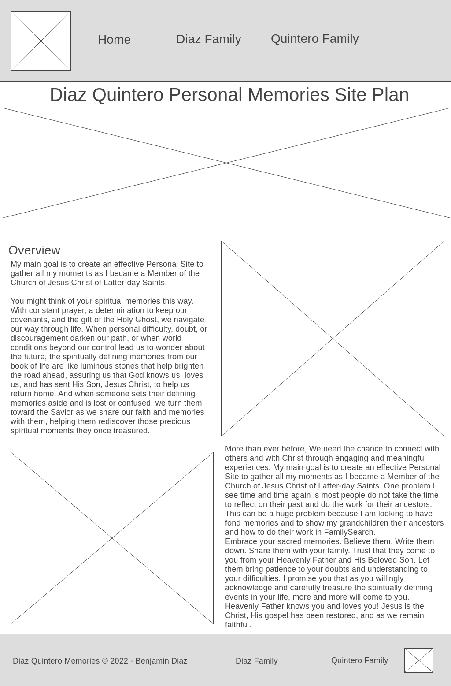
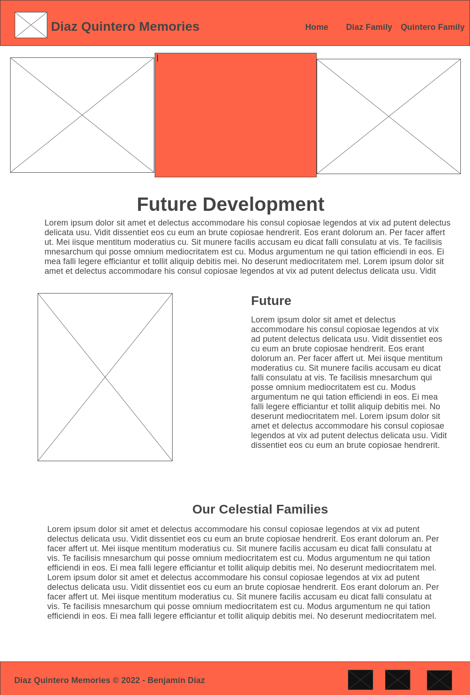

Overview
Purpose
My main goal is to create an effective Personal Site to gather all my moments as I became a Member of the Church of Jesus Christ of Latter-day Saints. You might think of your spiritual memories this way. With constant prayer, a determination to keep our covenants, and the gift of the Holy Ghost, we navigate our way through life. When personal difficulty, doubt, or discouragement darken our path, or when world conditions beyond our control lead us to wonder about the future, the spiritually defining memories from our book of life are like luminous stones that help brighten the road ahead, assuring us that God knows us, loves us, and has sent His Son, Jesus Christ, to help us return home. And when someone sets their defining memories aside and is lost or confused, we turn them toward the Savior as we share our faith and memories with them, helping them rediscover those precious spiritual moments they once treasured.
Audience
Implementing my solution will help me show our Memories Personal Site that will help our families grow together and I can leave something to our grandchildren to continue the work. I would love to tell you more about what I am working on. Wait, is there a time that we can talk in the next day or two? Or just wait for the upcoming release of my personal web site and you can see it for yourself.
Some experiences are so sacred that we guard them in our spiritual memory and do not share them. “Angels speak by the power of the Holy Ghost; wherefore, they speak the words of Christ.” “Angels [have not] ceased to minister unto the children of men.
Branding
Website Logo
Style Guide
Color Palette
Palette URL: https://coolors.co/396e94-e7c24f-a43312-381d2a-aabd8c| Primary | Secondary | Accent 1 | Accent 2 |
|---|---|---|---|
| [#B4EDD2] | [#A0CFD3] | [#8D94BA] | [#9A7AA0] |
Typography
Heading Font: Rock Salt
Paragraph Font: Roboto
Normal paragraph: example
My main goal is to create an effective Personal Site to gather all my moments as I became a Member of the Church of Jesus Christ of Latter-day Saints. One problem I see time and time again is most people do not take their time to reflect on their past and do the work for their ancestors. This can be a huge problem because I am looking to have fond memories and to show my grandchildren their ancestors and how to do their work in FamilySearch.
Colored paragraph example
Embrace your sacred memories. Believe them. Write them down. Share them with your family. Trust that they come to you from your Heavenly Father and His Beloved Son. Let them bring patience to your doubts and understanding to your difficulties. I promise you that as you willingly acknowledge and carefully treasure the spiritually defining events in your life, more and more will come to you. Heavenly Father knows you and loves you! Jesus is the Christ, His gospel has been restored, and as we remain faithful.
Navigation
Site Map
Content
Home page
More than ever before, We need the chance to connect with others and with Christ through engaging and meaningful experiences. My main goal is to create an effective Personal Site to gather all my moments as I became a Member of the Church of Jesus Christ of Latter-day Saints. One problem I see time and time again is most people do not take their time to reflect on their past and do the work for their ancestors. This can be a huge problem because I am looking to have fond memories and to show my grandchildren their ancestors and how to do their work in FamilySearch.
Images from the Diaz Quintero Family
Diaz Family
Embrace your sacred memories. Believe them. Write them down. Share them with your family. Trust that they come to you from your Heavenly Father and His Beloved Son. Let them bring patience to your doubts and understanding to your difficulties. I promise you that as you willingly acknowledge and carefully treasure the spiritually defining events in your life, more and more will come to you. Heavenly Father knows you and loves you! Jesus is the Christ, His gospel has been restored, and as we remain faithful.
Images from the Diaz Family
Quintero Family
Because love is the great commandment, it ought to be at the center of all and everything we do in our own family, in our Church callings, and in our livelihood. Love is the healing balm that repairs rifts in personal and family relationships. It is the bond that unites families, communities, and nations. Love is the power that initiates friendship, tolerance, civility, and respect. It is the source that overcomes divisiveness and hate. Love is the fire that warms our lives with unparalleled joy and divine hope. Love should be our walk and our talk.”
Images from the Quintero Family
Wireframes
Home - Wireframe

Diaz Family - Page 2 - Wireframe
Quintero Family - Page 3 - Wireframe
Photos - Future Development
Images from the the pictures, this is for further Development after the course is completed, this sites will be moved to https://benmerq.com/index.html
